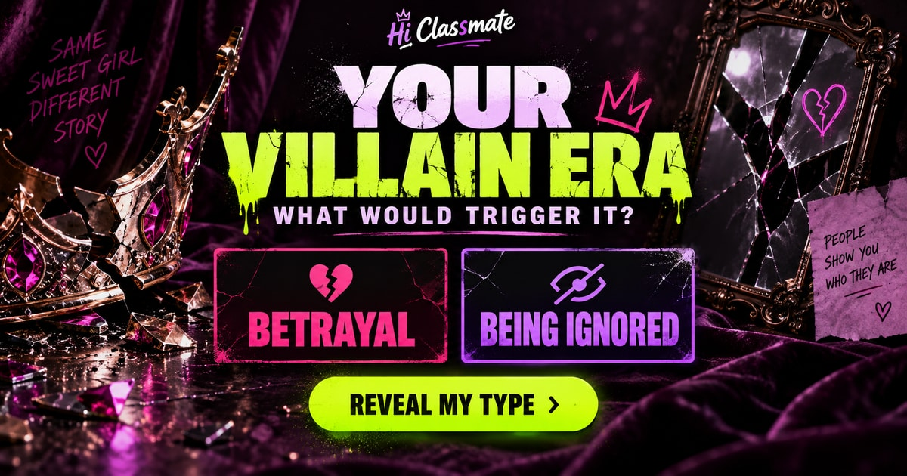

THE SIDE YOU KEEP OFF THE GC
What would trigger
your villain era?
Nice person.
Wrong trigger.
You have a good side.
Let’s meet the one with receipts.
YOUR VILLAIN ERA IS
- Your trigger
- Your excuse
- Your way back

Everybody has a last straw.
A leaked GC screenshot. A barkada that moved on without you. An apology that arrived way too late. Choose what you really think in eight familiar situations and find the pressure point behind your villain era.
Which hidden side is yours?
The Applause Addict, The Beautiful Revenge, The Puppet Master, The Untouchable, The Main Character, or The Fallen Angel. Each result reveals a trigger, the excuse that sounds reasonable in your head, and one line that could bring you back.
How your type match works
Each answer adds points to one or two types. Your strongest type is selected after accounting for the points available to each type. The match percentage shows how many of that type’s available points your answers earned. Identical choices give the same result.